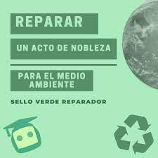
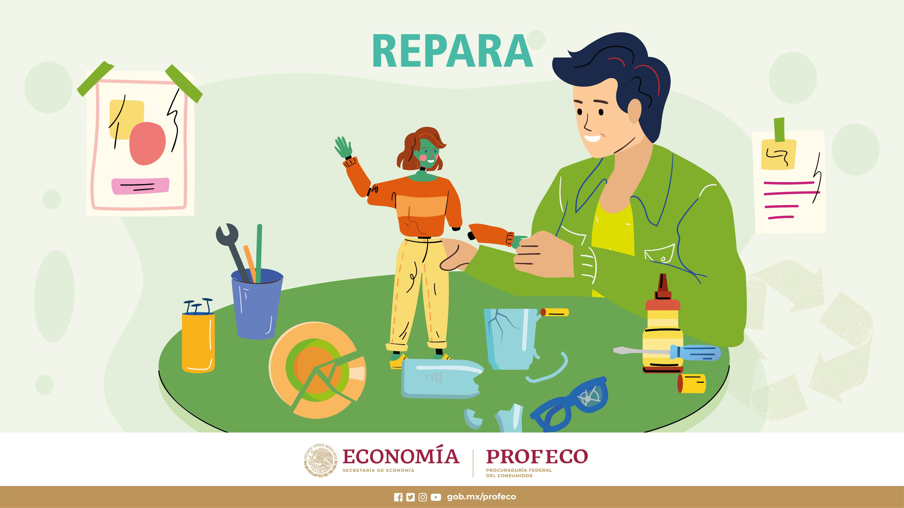

xddd
Reparar
xd
El movimiento reparacionista se concentra en la frase «aquí no se tira nada» e incluye iniciativas para dar una segunda vida a zapatos, electrodomésticos y hasta bicicletas.
El movimiento ecologista, reparar, implica romper la inercia de comprar, tirar -cuando algo se estropea o, peor aún, se queda obsoleto-, y adquirir de nuevo. Contra esta regla del usar y tirar, y volver a comprar, existe un proyecto global que coge fuerza: el reparacionismo. Este movimiento recupera las buenas costumbres de nuestros abuelos concentradas en el mantra «aquí no se tira nada» e incluye iniciativas que permiten dar una segunda vida a nuestros zapatos, electrodomésticos o, por ejemplo, bicicletas.
«Es posible que un teléfono móvil o alguna prenda de vestir se haya roto, pero seguro que es posible arreglarlo o darle una segunda vida», dice Teresa Rodríguez, de Amigos de la Tierra.
Esta asociación protectora de la naturaleza ha creado la plataforma Alargascencia, que recoge mucha información y más de 1.000 establecimientos de toda España donde poder reparar todo tipo de objetos, desde vestidos o una batidora hasta bicicletas. El objetivo, recuerda Rodríguez, es reducir basura y también evitar la extracción de nuevos recursos naturales, que además son limitados.
xddddddd

xddddddd
¿Sabía que genera 20 kilos de basura electrónica al año?
El reciclaje es crucial, pero reducir, reutilizar y reparar son básicos para disminuir la huella humana en el planeta

xddddddd